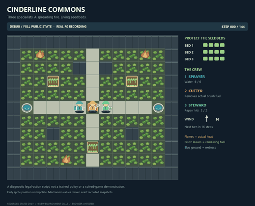
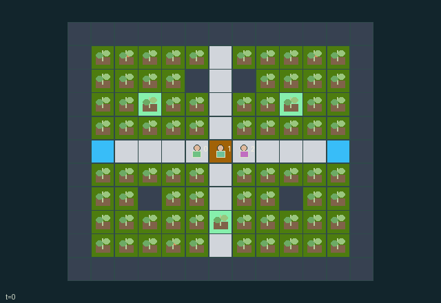

GI074 · Cinderline Commons

Original recording scope: Full-state audit view · Mode: Saved-state replay
Additional generated state replay (different trajectory / full-state debug)

Extinguish all fire while preserving all three seedbeds, using spatial resupply, cooling, fuel removal and repair.
Identity and original contract
3 independently actionable roles; 10 discrete commands per role; 1471 native observation columns per role; original horizon 144 steps. Declared per-step reward range: -6 to 6. Observation regime: fully_observable.
Source SHA-256: 7c3c8e794ed83a2103d086623f9c01a837de9a6a80d2b5ec06abcf278fee9aa6
The objective, rewards, population, map and horizon remain original. A preview is not a success claim.
Objective and gameplay
Extinguish all fire while preserving all three seedbeds, using spatial resupply, cooling, fuel removal and repair.
Movable specialists target actual adjacent cells. Spray precedes cutter/repair eligibility; synchronous finite-fuel fire and delayed resupply change later opportunities.
- Three distinct roles protect all three seedbeds. Coordinates and movement are real; walls block movement and fire.
- Actor 0 sprays adjacent cells using water and refills only at a well. Actor 1 cuts up to three brush fuel units. Actor 2 repairs a cool living bed using a kit and restocks only at the depot.
- Spray is applied before cut/repair heat eligibility, enabling a joint cooling-and-tool interaction. Each actor selects only one action per step.
- Dry existing fires consume one fuel unit and spread synchronously from one snapshot. Newly ignited cells cannot cascade again in the same step.
- Heat and wetness bars, flame/brush/water active masks and bed health all come from actual state. Generic glyphs are not custom flame shaders or spray arcs.
- Movement cannot enter old occupied cells or old heat above 1. All contenders for the same otherwise-free agent target remain in place.
- Seedbeds lose health after fire update. Any zero-health bed causes failure; otherwise no fire causes success. At 144 steps an unfinished episode truncates.
- Natural termination takes priority at the time limit. Ended raw states absorb; replay old events only once per episode, tick and slot.
- All current state is public. Previous committed actions may be shown; never display another role's pending action or external reset key.
- No rollout or rendered preview has occurred. This scene binds source state for a later trusted replay and supplies no canned successful trajectory.
Ending: Failure if any seedbed reaches zero health; otherwise success if all heat is zero. Failure wins simultaneous natural conditions.
What this game explores
Resource commons & externalities: An action changes a persistent resource or burden that another role also encounters. Compare extraction with maintenance and record the downstream resource trajectory.
Complementary production & service: A useful outcome requires ordered stages, scarce equipment or another role's capability. Measure real completed products and resource circulation rather than counting intermediate actions as success.
Survival, protection & rescue: Protection and repair alter another role's future feasible actions. Record losses, exposure, rescue and infrastructure as well as delivery; survival is determined by the actual kernel.
These are questions supported by rule structure, not observed learning effects.
Play it: operating walkthrough
crucibles play --game gi074Keep Python running and open its printed address. Select this game, set a seed and press Create session. The game itself is always English.
Assign a role range to Host with Assign / take over, or Assign all roles. Invite a second participant with Create player invitation, then assign a disjoint subset. Every original role is available.
For every owned role choose a legal command and press Queue. Arrow keys / WASD queue a declared directional action for the current role camera when available. Space or Advance one joint step advances everyone together. Non-directional games use the selectors.
Unqueued roles use the labelled untrained uniform-legal policy. Take over or release roles before the next step without resetting. Full-state debug is privileged and permanently logged; role cameras preserve permissions. Close the session to retain logs. Server restart does not restore sessions.
Complete command reference
IDs and English labels exactly match the manifest. Availability depends on role, resources, location and phase. An available action can still have no productive effect.
0·wait
1·move north
2·move east
3·move south
4·move west
5·role tool north: sprayer spray / cutter cut / steward repair
6·role tool east: sprayer spray / cutter cut / steward repair
7·role tool south: sprayer spray / cutter cut / steward repair
8·role tool west: sprayer spray / cutter cut / steward repair
9·sprayer refill at well / steward restock at depot; cutter padding masked false
Roles and capability identifiers
These original role names describe capabilities, not interchangeable skins. Check each owned role's legal selector before planning handoffs.
agent_0·sprayer
agent_1·cutter
agent_2·steward
Information and observation permissions
All current mechanism-relevant state is public. Each actor gets the exact declared flat observations and structural masks. Actions are public only after commitment; external PRNG provenance and future submitted actions are excluded. Derived scene arrays add no policy information.
The GIF is full-state debug and may reveal hidden entities or private state. Train on obs[agent], not the picture, state tree or another role's private row. Field slices and visibility are in the original manifest.
Reinforcement-learning integration
import jax
from crucibles_jaxmarl import make
env = make("gi074")
key = jax.random.PRNGKey(0)
key, rk, ak, sk = jax.random.split(key, 4)
obs, state = jax.jit(env.reset)(rk)
actions = env.sample_actions(ak, state)
obs, state, rewards, dones, info = jax.jit(env.step_env)(sk, state, actions)
done = dones["__all__"]Observations are float32 vectors of width 1471; actions are scalar int32; masks have 10 entries. Supply all 3 roles each transition. Masked sampling is an engineering reference, not a trained learner.
step_env retains terminal data without reset. step performs outer autoreset and keeps terminal data in info["raw_state"] and info["raw_observation"]. Use dones["__all__"] for episode boundaries; separate completion, failure and time limit in analysis.
JIT or vmap equal identities and shapes. Split independent reset, policy and transition keys. Group different shapes explicitly; do not shrink the population or horizon. Host rendering stays outside training.
Training questions and fair evaluation
Define valid completion from the objective before fitting. Preserve original rewards and also report real deliveries/services, losses, resource state, unresolved episodes and per-role returns. Animation is not a reward signal.
An action changes a persistent resource or burden that another role also encounters. Compare extraction with maintenance and record the downstream resource trajectory.
A useful outcome requires ordered stages, scarce equipment or another role's capability. Measure real completed products and resource circulation rather than counting intermediate actions as success.
Protection and repair alter another role's future feasible actions. Record losses, exposure, rescue and infrastructure as well as delivery; survival is determined by the actual kernel.
Compare memory, communication or centralized critics under matched actor information. Declare critic access; keep actor inputs role-filtered. Match partner/opponent distributions, masks, compute and checkpoint selection. Final tests never enter fitting or selection.
Independent training runs or source-pairing blocks are inferential units; episodes from one policy are not independent training replications. Save hashes, keys, versions, device, time and cost. Negative, zero, failed and indeterminate outcomes are valid. No trained checkpoint or target score is supplied.
Classification and evidence
Overlapping editorial labels are reading aids, not proof of novelty, difficulty, strategic equivalence or learning effects.
- Resource commons & externalities
- Evidence
manifest.task.objective: Extinguish all fire while preserving all three seedbeds, using spatial resupply, cooling, fuel removal and repair.
- Evidence
scene.rules.0: Three distinct roles protect all three seedbeds. Coordinates and movement are real; walls block movement and fire.
- Evidence
scene.rules.1: Actor 0 sprays adjacent cells using water and refills only at a well. Actor 1 cuts up to three brush fuel units. Actor 2 repairs a cool living bed using a kit and restocks only at the depot.
- Complementary production & service
- Evidence
manifest.task.objective: Extinguish all fire while preserving all three seedbeds, using spatial resupply, cooling, fuel removal and repair.
- Evidence
manifest.task.interaction: Movable specialists target actual adjacent cells. Spray precedes cutter/repair eligibility; synchronous finite-fuel fire and delayed resupply change later opportunities.
- Evidence
manifest.actions.5: role tool north: sprayer spray / cutter cut / steward repair
- Survival, protection & rescue
- Evidence
manifest.task.objective: Extinguish all fire while preserving all three seedbeds, using spatial resupply, cooling, fuel removal and repair.
- Evidence
manifest.task.interaction: Movable specialists target actual adjacent cells. Spray precedes cutter/repair eligibility; synchronous finite-fuel fire and delayed resupply change later opportunities.
- Evidence
scene.rules.0: Three distinct roles protect all three seedbeds. Coordinates and movement are real; walls block movement and fire.
Source, receipts and preview limits
The additional generated state GIF replays saved untrained legal actions through the original kernel. At most 25 actual endpoints include initial and terminal state; no invented interpolation. It is full-state debug, not the role observation. Where an original scene preview exists, it is displayed first with its own recorded information scope. The two recordings may use different trajectories and views.
Original source, observation slices, manifest and mechanism
Native receipt · Presentation receipt
Engineering passes do not establish learning. Nonzero floating differences remain recorded and undetermined; no new tolerance was introduced. Human scores remain unverified.